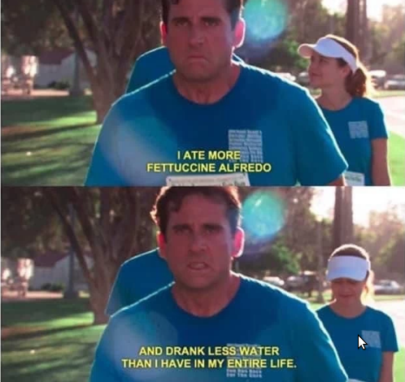

Michael's Fettucine Alfredo
Time to Carbo Load!
Perfect recipe for your pre 5K run!

Ingredients you'll need to recreate this iconic dish
- 4 lb Fettuccine Pasta
- 12 Tablespoons Butter
- 3 Garlic Clove (minced)
- 3 ½ cups Heavy Cream
- 2 teaspoon Salt
- 2 teaspoon Pepper
- 4 cup Shredded Parmesan Cheese
Let's get to making this dish!
- Start by bringing water to a boil in a large pot. Add salt to the water to season the pasta. Once it is boiling, add pasta and cook according to package instructions.
- Saute the garlic and butter together until softened -- about 1 to 2 minutes
- Add heavy cream and let simmer over medium-high heat for about 5 minutes to thicken. Add salt and pepper to taste. Add half of the parmesan cheese to the mixture and whisk well until smooth
- Save some pasta water. The pasta water is full of flavor and can be used to thin out the sauce.
- Toss alfredo sauce with fettuccine pasta and add half of the parmesan cheese. Once it is tossed, garnish with the remaining parmesan cheese. Add a little pasta water if it needs to be thinned out.
- Serve while hot to Michael Scott just before he is going for his 5K run!
